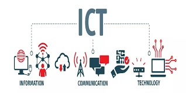

Index page
This is the index page, you can find my opinions on why I think this programme suits me and links to access other pages.
What is ICT?
Information and communications technology is an extensional term for information technology (IT) that combine communications with telecommunications (via Internet). (Source: Wikipedia)
Why ICT?
I liked ICT since I was a child. I like almost everything about it, from the basic programming to the
hardware
work. I think this is because I like working with logic.
in fact, I prefer "real" programming languages instead of markup languages.

ICT includes a bunch of stuff: here is a list of ICT fields:
- Computer Programmers
- Database Analysts
- Security/Networking Analysts
- Social Media Managers
- e-Marketing Specialists
- Mobile Application Developers
Why in the Netherlands?
A lot of people asked me why I chose the Netherlands and not any other European country, or the country I am
from (Italy).
I think Italy doesn't offer enough job opportunities for ICT. I think the Netherlands are a good country to get
the education from.
Maybe in the future I may also leave this country go get experiences in other places around the world.
Previous experience
I have some previous experience in coding from the high school. I did an ICT oriented school in Italy (Isis J.M. Keynes) and I also worked on some apps during projects. This allowed me to have a basic understanding of the subject. Another thing that I learned is what I like and what I don't. I like (coding, as I said before, ) network systems and cybersecurity (and cryptography). Something I didn't really enjoyed, instead, was the data part and the SQL language. Anyway, I am always ready to change opinion during these years at HZ.